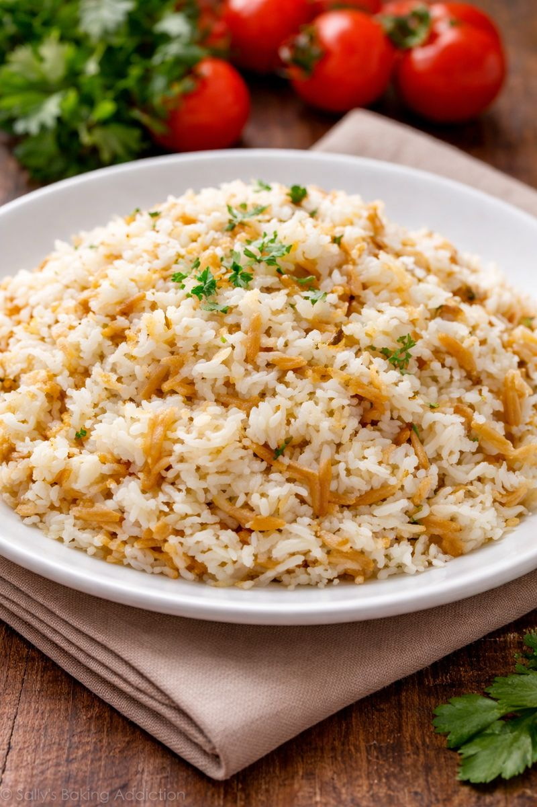

Home
Turkish Rice - Pilav

Description
A traditional Turkish rice pilaf cooked with butter, orzo, and hot water or stock until fluffy and fragrant.
Ingredients
- 2 cups rice (for pilaf)
- 3 cups hot water (or chicken stock)
- 1 tablespoon olive oil
- 2 tablespoons butter
- 2 tablespoons orzo (arpa şehriye)
- 1.5 teaspoons salt
Steps
- Wash 2 cups of rice and let it drain in a strainer.
- Add 1 tbsp olive oil and 2 tbsp butter to a wide pot. Add 2 tbsp orzo (arpa şehriye) and toast until golden.
- Add the drained rice and start toasting it.
- Add 1.5 tsp salt.
- Toast the rice on low heat for 3–4 minutes, stirring constantly, then add 3 cups boiling water.
- Cover the pot. Cook on high heat for 3–4 minutes, then medium heat for 3–4 minutes, and finally on low heat until the rice absorbs all the water and becomes fluffy.
- When the water is absorbed, remove from heat and let it rest (steam) for 20 minutes.
- Serve as you like. Enjoy!